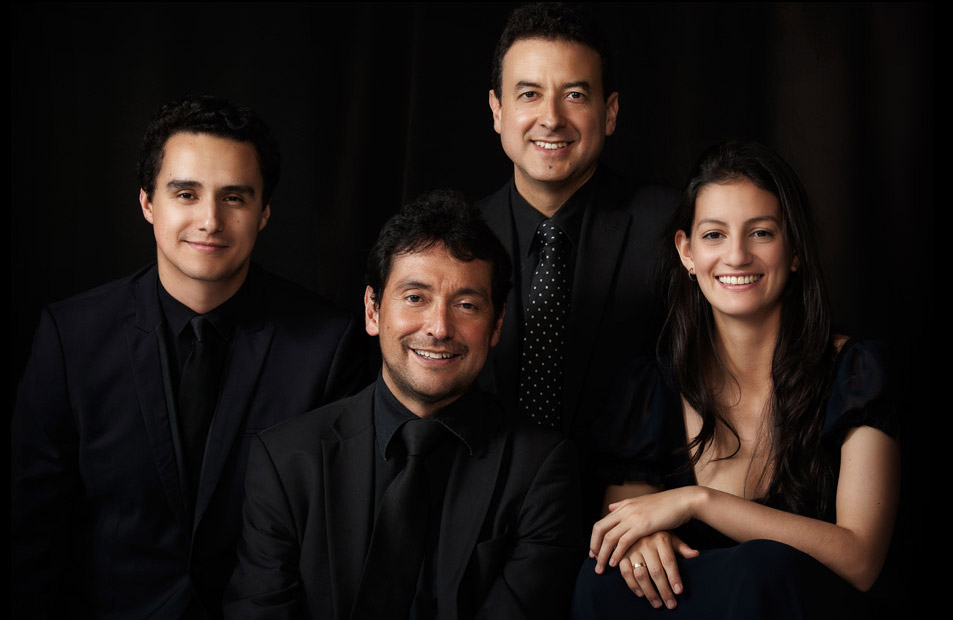

![En el año 2004 nació el Cuarteto de Cuerdas Santa Fé, con sede en la ciudad de Bogotá. Sus integrantes son destacados músicos de la Orquesta Sinfónica Nacional de Colombia, la Orquesta Filarmónica de Bogotá, y profesores universitarios. Aparte de abordar el repertorio universal, el cuarteto tiene como prioritaria la labor de interpretar las obras de compositores contemporáneos colombianos y latinoamericanos, así como incluir en su repertorio la música tradicional colombiana. En 2005 el Cuarteto Santa Fé participó en la grabación de un nuevo CD de compositor Ricardo Gomez. A su vez, fueron seleccionados para grabar el Cuarteto de Cuerdas del compositor venezolano Alberto Pérez Barrios, en una producción del Centro de Música Latinoamericana de la Universidad de Miami. En 2006 el cuarteto fué ganador de la convocatoria del Ciclo de Conciertos del Instituto Distrital de Cultura y Turismo de Bogotà. La integración de diversas artes es una actividad central del cuarteto. Se destacan la participación en la coproducción realizada por Mapa Teatro y la Embajada de Francia, fusionando la literatura, la música y el cine; la banda sonora de la película "Visitas", compuesta por Felipe Pérez Uribe; y la musicalización del cortometraje "Fabio Rojas" del director Carlos Alarcón. El Cuarteto Santa Fé ha ofrecido conciertos en el Teatro Delia Zapata de Bogotá, el Teatro Fabio Lozano de la Universidad Jorge Tadeo Lozano, el Teatro Pablo VI de la Universidad Javeriana, el Teatro Pablo Tobón Uribe de Medellín, el Teatro Amira de la Rosa en Barranquilla; y en el Teatro Guillermo Valencia de Popayán, en el marco del Festival de Música Religiosa de dicha ciudad en 2005, 2006, 2007, y 2011. En 2006 y 2007 el cuarteto participó en el Festival de Música de Cámara de Compositores Colombianos en Medellín. En 2007 fueron invitados junto al pianista Sergei Sitchkov a la II Temporada Internacional de Música de Cámara en el Auditorio de Compensar en Bogotá. Recientemente, el cuarteto fue escogido para grabar la obra “Mientras Duerme” de Violeta Cruz, ganadora del Concurso Nacional de Composición del Ministerio de Cultura, y en Mayo de 2010 participaron junto al guitarrista colombiano Carlos Posada en el VII Encuentro Internacional de Guitarra de Compensar. En el marco de los “Miércoles Musicales en la Tadeo” se destacó la interpretación del Quinteto con Clarinete de Johannes Brahms con el clarinetista colombiano Freddy Pinzón. El Cuarteto Santa Fé se presentó junto a la pianista Blanca Uribe en el Festival Internacional de Música de Medellín del año 2013.](images/u563-19.png)